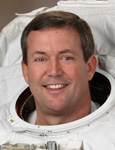

Lyndon B. Johnson Space Center
Houston, Texas 77058
|
National Aeronautics
and Space Administration Lyndon B. Johnson Space Center Houston, Texas 77058 |
 |
Biographical Data |
||
MICHAEL J. FOREMAN (CAPTAIN, U.S. NAVY,
RET.)
NASA ASTRONAUT
PERSONAL DATA: Born March 29, 1957 in Columbus, Ohio. His hometown is Wadsworth, Ohio. Married to the former Lorrie Dancer of Oklahoma City, Oklahoma. They have three children. Recreational interests include golf, home repair/improvement, working out and spending time with his family. His mother, Nancy C. Foreman, resides in Wadsworth, Ohio. His father, James W. Foreman, is deceased. Lorrie’s mother, Pat Dancer, resides in Tulsa, Oklahoma. Her father, James L. Dancer, is deceased.
EDUCATION: Graduated from Wadsworth High School, Wadsworth, Ohio, in 1975; received a Bachelor of Science Degree in Aerospace Engineering from the U.S. Naval Academy in 1979, and a Master of Science in Aeronautical Engineering from the U.S. Naval Postgraduate School in 1986.
ORGANIZATIONS: Association of Naval Aviation, United States Naval Academy Alumni Association, Association of Space Explorers.
AWARDS: Legion of Merit, Defense Meritorious Service Medal, Meritorious Service Medal, Navy Commendation Medal, Navy Achievement Medal and various other service awards.
SPECIAL HONORS: Graduated with Distinction, U.S. Naval Postgraduate School; Admiral William Adger Moffett Aeronautics Award, U.S. Naval Postgraduate School; Distinguished Graduate, U.S. Naval Test Pilot School; Empire Test Pilots School-sponsored award for best final report (DT-IIA), U.S. Naval Test Pilot School.
EXPERIENCE: Foreman was designated as a Naval Aviator in January 1981, and assigned to Patrol Squadron 23 at NAS Brunswick, Maine. Following this tour, he attended the U.S. Naval Postgraduate School in Monterey, California, where he earned a Master of Science in Aeronautical Engineering in 1986. As a graduate student, Foreman conducted thesis research at the NASA Ames Research Center in Mountainview, California. Following graduation, he was assigned as the Assistant Air Operations Officer on the USS CORAL SEA (CV 43) homeported in Norfolk, Virginia. Upon selection to the U.S. Naval Test Pilot School (USNTPS) in 1989, he moved to NAS Patuxent River, Maryland. He graduated from USNTPS in June 1990, and was assigned to the Force Warfare Aircraft Test Directorate. In 1991, he was reassigned as a Flight Instructor and the Operations Officer at USNTPS. During his tenure there, he instructed in the F-18, P-3, T-2, T-38, U-21, U-6 and X-26 glider. In 1993, Foreman was assigned to the Naval Air Systems Command in Crystal City, Virginia, first as the Deputy and then as the Class Desk (Chief Engineer) Officer for the T-45 Goshawk aircraft program. Following that tour, he returned to NAS Patuxent River, this time as the Military Director for the Research and Engineering Group of the Naval Air Warfare Center Aircraft Division. In addition to his duties at Patuxent River, he was assigned as the Navy liaison to NASA’s Advanced Orbiter Cockpit Project at the Johnson Space Center. Foreman was working as the Technical Lead for the Advanced Orbiter Cockpit Project team when he was selected for the Astronaut Program. He retired from the Navy in June 2009.
Foreman has logged over 7,000 hours in more than 50 different aircraft.
NASA EXPERIENCE: Selected by NASA in June 1998, he reported for training in August 1998. Astronaut Candidate Training included orientation briefings and tours, numerous scientific and technical briefings, intensive instruction in shuttle and International Space Station systems, physiological training and ground school to prepare for T-38 flight training as well as learning water and wilderness survival techniques. He was initially assigned technical duties in the Astronaut Office Space Station Branch, where he represented the Astronaut Office on training issues. He was then assigned to the Space Shuttle Branch as a liaison between the Johnson Space Center and the Kennedy Space Center and also served as Deputy of the Space Shuttle Branch. Foreman also served as Chief of External Programs at Glenn Research Center, Ohio, from June 2010 to May 2011. Foreman is currently assigned as the Safety Branch Chief in the Astronaut Office. He also supports the Exploration Branch, working on the Commercial Crew Development Program. A veteran of two space flights, Foreman flew on STS-123 in March 2008, and STS-129 in November 2009, and has logged more than 637 hours in space, including 32 hours and 19 minutes of EVA in five spacewalks.
SPACEFLIGHT EXPERIENCE: STS-123 Endeavour (March 11 to March 26, 2008) was a night launch and landing. It was the 25th shuttle/station assembly mission. Endeavour’s crew delivered the Japanese Experiment Logistics Module - Pressurized Section, the first pressurized component of Japanese Aerospace Exploration Agency’s (JAXA’s) Kibo Laboratory and the final element of the station’s Mobile Servicing System, the Canadian-built Dextre, also known as the Special Purpose Dextrous Manipulator. While on the station, Foreman performed three spacewalks for a total of 19 hours and 34 minutes of EVA. The STS 123 crew also delivered Expedition 16 Flight Engineer Garrett Reisman, and returned to Earth with the European Space Agency’s (ESA’s) Léopold Eyharts. The mission was accomplished in 250 orbits of the Earth, traveling more than 6.5 million miles in 15 days, 18 hours, 10 minutes and 54 seconds.
STS-129 (November 16 to November 29, 2009) was the 31st shuttle flight to the International Space Station. During the mission, the crew delivered two Express Logistics Carriers (ELC racks) to the space station, about 30,000 pounds of replacement parts for systems that provide power to the station, keep it from overheating and maintain proper orientation in space. During the mission, Foreman performed two spacewalks for a total of 12 hours and 45 minutes of EVA. The STS-129 mission was completed in 10 days, 19 hours, 16 minutes and 13 seconds, traveling 4.5 million miles in 171 orbits, and returned to Earth, bringing back with them NASA’s Nicole Stott, following her tour of duty aboard the station.
JULY 2013